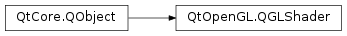

QGLShader¶
Note
This class was introduced in Qt 4.6.
Synopsis¶
Functions¶
- def
compileSourceCode(source) - def
compileSourceCode(source) - def
compileSourceCode(source) - def
compileSourceFile(fileName) - def
isCompiled() - def
log() - def
shaderId() - def
shaderType() - def
sourceCode()
Static functions¶
- def
hasOpenGLShaders(type[, context=nullptr])
Detailed Description¶
The
PySide2.QtOpenGL.QGLShaderclass allows OpenGL shaders to be compiled.This class supports shaders written in the OpenGL Shading Language (GLSL) and in the OpenGL/ES Shading Language (GLSL/ES).
PySide2.QtOpenGL.QGLShaderandPySide2.QtOpenGL.QGLShaderProgramshelter the programmer from the details of compiling and linking vertex and fragment shaders.Note
This class has been deprecated in favor of
PySide2.QtGui.QOpenGLShader.See also
-
class
PySide2.QtOpenGL.QGLShader(type[, parent=nullptr])¶ -
class
PySide2.QtOpenGL.QGLShader(type, context[, parent=nullptr]) Parameters: - type –
PySide2.QtOpenGL.QGLShader.ShaderType - context –
PySide2.QtOpenGL.QGLContext - parent –
PySide2.QtCore.QObject
Constructs a new
PySide2.QtOpenGL.QGLShaderobject of the specifiedtypeand attaches it toparent. If shader programs are not supported,QGLShaderProgram.hasOpenGLShaderPrograms()will return false.This constructor is normally followed by a call to
PySide2.QtOpenGL.QGLShader.compileSourceCode()orPySide2.QtOpenGL.QGLShader.compileSourceFile().The shader will be associated with the current
PySide2.QtOpenGL.QGLContext.See also
PySide2.QtOpenGL.QGLShader.compileSourceCode()PySide2.QtOpenGL.QGLShader.compileSourceFile()Constructs a new
PySide2.QtOpenGL.QGLShaderobject of the specifiedtypeand attaches it toparent. If shader programs are not supported, thenQGLShaderProgram.hasOpenGLShaderPrograms()will return false.This constructor is normally followed by a call to
PySide2.QtOpenGL.QGLShader.compileSourceCode()orPySide2.QtOpenGL.QGLShader.compileSourceFile().The shader will be associated with
context.- type –
-
PySide2.QtOpenGL.QGLShader.ShaderTypeBit¶ This enum specifies the type of
PySide2.QtOpenGL.QGLShaderthat is being created.Constant Description QGLShader.Vertex Vertex shader written in the OpenGL Shading Language (GLSL). QGLShader.Fragment Fragment shader written in the OpenGL Shading Language (GLSL). QGLShader.Geometry Geometry shaders written in the OpenGL Shading Language (GLSL), based on the GL_EXT_geometry_shader4 extension.
-
PySide2.QtOpenGL.QGLShader.compileSourceCode(source)¶ Parameters: source – str Return type: PySide2.QtCore.boolSets the
sourcecode for this shader and compiles it. Returnstrueif the source was successfully compiled, false otherwise.
-
PySide2.QtOpenGL.QGLShader.compileSourceCode(source) Parameters: source – unicode Return type: PySide2.QtCore.boolThis is an overloaded function.
Sets the
sourcecode for this shader and compiles it. Returnstrueif the source was successfully compiled, false otherwise.
-
PySide2.QtOpenGL.QGLShader.compileSourceCode(source) Parameters: source – PySide2.QtCore.QByteArrayReturn type: PySide2.QtCore.boolThis is an overloaded function.
Sets the
sourcecode for this shader and compiles it. Returnstrueif the source was successfully compiled, false otherwise.
-
PySide2.QtOpenGL.QGLShader.compileSourceFile(fileName)¶ Parameters: fileName – unicode Return type: PySide2.QtCore.boolSets the source code for this shader to the contents of
fileNameand compiles it. Returnstrueif the file could be opened and the source compiled, false otherwise.
-
static
PySide2.QtOpenGL.QGLShader.hasOpenGLShaders(type[, context=nullptr])¶ Parameters: - type –
PySide2.QtOpenGL.QGLShader.ShaderType - context –
PySide2.QtOpenGL.QGLContext
Return type: PySide2.QtCore.boolReturns
trueif shader programs of typetypeare supported on this system; false otherwise.The
contextis used to resolve the GLSL extensions. Ifcontextis null, thenQGLContext.currentContext()is used.- type –
-
PySide2.QtOpenGL.QGLShader.isCompiled()¶ Return type: PySide2.QtCore.boolReturns
trueif this shader has been compiled; false otherwise.
-
PySide2.QtOpenGL.QGLShader.log()¶ Return type: unicode Returns the errors and warnings that occurred during the last compile.
-
PySide2.QtOpenGL.QGLShader.shaderId()¶ Return type: PySide2.QtOpenGL.GLuintReturns the OpenGL identifier associated with this shader.
See also
-
PySide2.QtOpenGL.QGLShader.shaderType()¶ Return type: PySide2.QtOpenGL.QGLShader.ShaderTypeReturns the type of this shader.
-
PySide2.QtOpenGL.QGLShader.sourceCode()¶ Return type: PySide2.QtCore.QByteArrayReturns the source code for this shader.
© 2018 The Qt Company Ltd. Documentation contributions included herein are the copyrights of their respective owners. The documentation provided herein is licensed under the terms of the GNU Free Documentation License version 1.3 as published by the Free Software Foundation. Qt and respective logos are trademarks of The Qt Company Ltd. in Finland and/or other countries worldwide. All other trademarks are property of their respective owners.